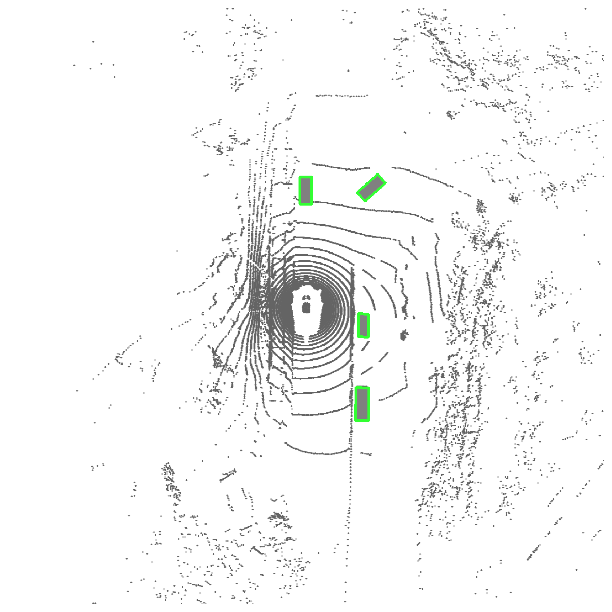
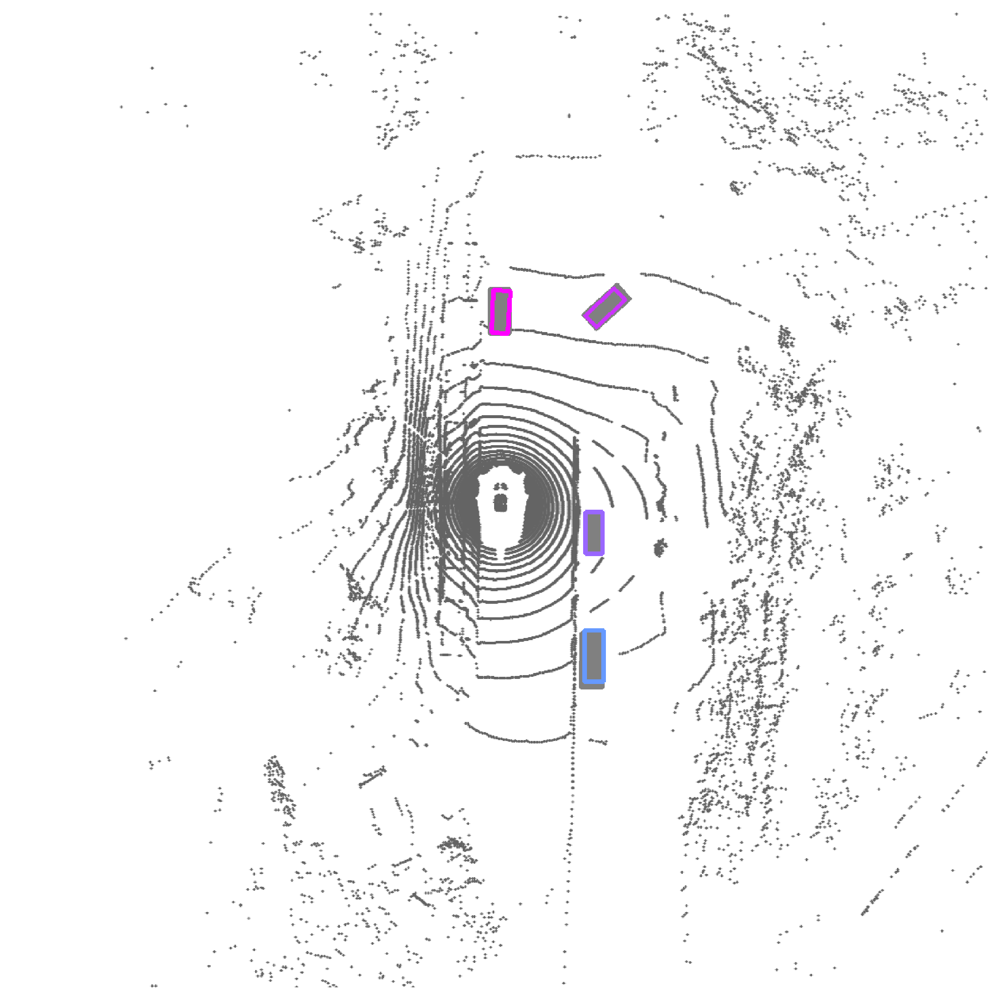

- First fully autoregressive 3D detector that directly generates object sequences from point clouds, performing on par with leading proposal-based and query-based detectors.
- Detailed ablation of design factors—including object-level tokenization, sequence ordering, and decoding methodologies—that are critical for effective autoregressive 3D detection.
- New capabilities enabled by the autoregressive formulation: compatibility with RL fine-tuning, and promptable decoding.
Cascading Refinement
Comparison of detections before and after cascading refinement. The completion model conditioned on the prior's outputs recovers missed detections while preserving precision.
Generates boxes from first to last, ground-truth boxes are in gray.
Ground Truth
Before Refinement
After Refinement


